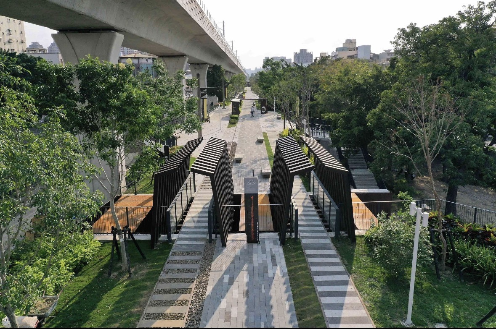
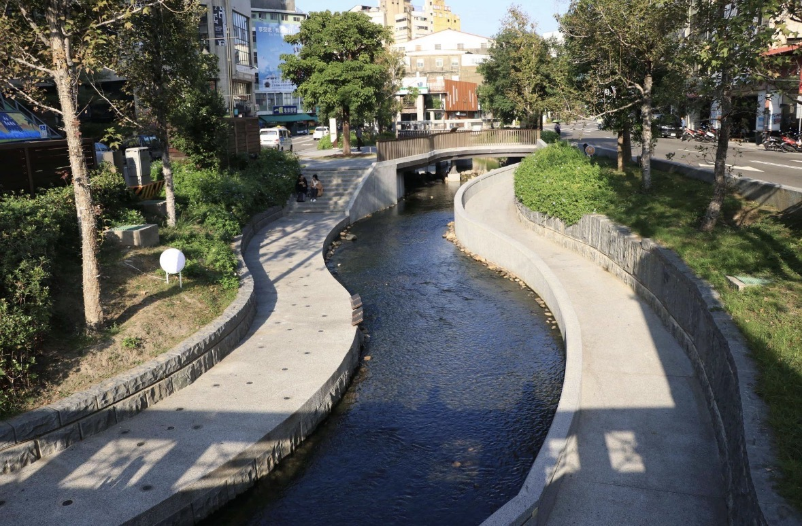

1. 三重平推鏡頭 ↔️
運用三組「平推鏡頭 (Tracking Shot)」貫穿全片，對比從急促趕路、平靜感受，到歡笑互動的三種行人狀態，展現心境轉折。
✨ 讓煩惱化為泡影，在綠川重拾清醒 ✨
在快節奏的都市與窒息的日常中，一部探討「停下腳步、重新呼吸」的都市療癒系影像作品。
《綠空慢泡，綠川漾抹》講述一名被蜂擁而至的電話、訊息與期末壓力逼至臨界點的大學生，在一次偶然滑動 IG Reels 的瞬間，被台中綠空廊道與綠川的悠閒風景吸引。
當主角步入綠空廊道、穿過象徵心境轉化的「透明膜」與「夢幻泡泡」後，原本急促混亂的世界逐漸慢了下來。透過走訪復古商店、比對舊明信片中的景緻，最終在綠川河畔找回內心的平靜與清醒。
運用三組「平推鏡頭 (Tracking Shot)」貫穿全片，對比從急促趕路、平靜感受，到歡笑互動的三種行人狀態，展現心境轉折。
以觸碰「透明膜」與「泡泡破裂 (啵)」作為環境聲音與色彩的切換關鍵，象徵打破窒息日常、重拾清晰感官。
透過穿越時空的舊明信片尋找實景，讓主角從「尋找照片位置」的過程，體驗現實世界景緻的美好。
畫面快速切換於辦公室、電梯、街道等 10 個壓迫感背景，直到滑到介紹綠空廊道的影片，決定開門出發。
手指戳向透明膜與泡泡，噪音瞬間淡去、鳥鳴浮現。漫步至庫酷復古商店，帶走一張寫滿故事的綠川明信片。
手持明信片與實景重合，「喀擦！」一聲記錄當下。看著身旁放鬆的人群，嘴角露出了久違的微笑。
坐在綠川河畔，微風與水波蕩漾。伴隨泡泡輕輕破裂，煩惱化為泡影，鏡頭拉遠留下一抹靜謐的清涼。

保留舊鐵道歲月痕跡的空中綠色散步廊道，交錯的光影與木植景觀，是主角與觀眾重新呼吸的第一站。

結合人文歷史與水岸綠化的城市動脈，清澈水波與散落的透明泡泡，為故事劃下最舒心的句點。